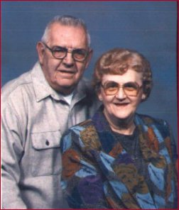

Anna Kidman
Dowgiac, Michigan
“My name is Anna Kidman. I am 73, have raised a
family of 9 children, eight of my own and a foster
child, who lost her mother shortly after immigrating to
America from Germany. I volunteer my time at St.
Vincent de Paul, where I cheer the lonely, feed the
hungry, and clothe the poor. In January 1995 I became a
widow when I lost my husband, Terry, to lung
cancer.
“Recently, President Clinton's train passed through
my home town, on his way to the Democratic National
Convention. When I heard that his train would pass
through Dowgiac, I encouraged everyone I spoke with to
come to the train station for a chance to see the
President. I inherit my passion and activism from my
father, who immigrated to America from Poland in 1912.
On election day, my father would put on his suit, go
door to door, and encourage our friends and neighbors
to vote. Well, the train came, passed through town, and
left. We didn't get to see the President. When I told
my daughter about the train, she said she would e-mail
the President and ask him for a sign that the average
person can be heard. So here I am. I was given a chance
to tell you why I support the President and Mrs.
Clinton.
“The President and Mrs. Clinton, Vice President and
Mrs. Gore, are what's good for America. I believe that
they have not recieved enough credit for what they have
done, and continue to do. It takes a lot of courage to
fight for what's right ... and it takes team effort.
The policies of your administration are truly focused
toward the needs of the American people, not only in
the present, but for generations to come. I admire the
way the you stood firm in the halls of Congress to
protect Affirmative Action, Education, Medicare, the
Environment, Welfare Reform and raising the Minimum
Wage, which needs to go higher yet. Thank you,
President Clinton, for taking on the Tobbacco Industry.
It is a great comfort to me, not only because of the
loss of my husband, but because I know that you are
trying to protect my grandchildren, and all children,
from the destruction caused by addiction to nicotine.
Yes, it is addictive, even during chemotherapy, my
husband, Terry, craved cigarettes.
“Thank you, First Lady Hillary Rodham Clinton. In my
community work, I am involved with people of all ages,
races, and walks of life. I know it takes a villiage to
raise a child. I hate to think of where my
foster-daughter, Theresa, would be today had we not
been there for her. There are countless other young
people that have touched my life through my children.
Yes, Hillary, you are right, it is not a new idea, but
a way of living that needs to be emphasized in our
society as a whole. I am very proud that we have a
First Lady who is involved in the social issues of the
day, and actively working to find solutions to social
needs. Her efforts on behalf of health care reform and
the President's program to end illiteracy in America
are two such fine efforts. I know that it is difficult
to bring about change in a damned if you do damned if
you don't situation. President Clinton's vision for
America, and his realistic approach, comes at a crucial
point in our history. I look forward to seeing you
re-double your efforts on these and other important
issues. Keep up the good work!
“Everyone should remember to vote on November 5!!!
”